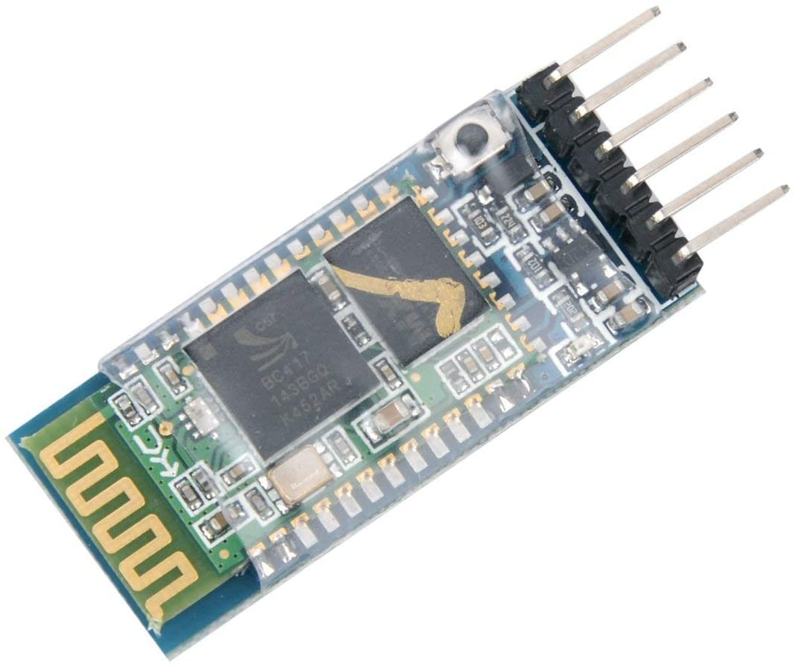

TF2 Sentry - Page Work in Progress
Bluetooth System
Part of the engineer's tools in the game is his PDA. It let's him know the status of his buildings. For the sentry, that's the current level of the sentry, the health, it's ammo, and whether it's being sapped or not. I decided to make the PDA an app for a smartphone, so I can have a project to work on for a smartphone as well. This is the reason for the bluetooth. The bluetooth will be used for the STM and the smartphone to communicate with each other. The bluetooth device I will use for the STM is the HC05 by HiLetGo.
HC05 - Why this device?

Bluetooth on the STM
Code on the STM
Oscilloscope Image